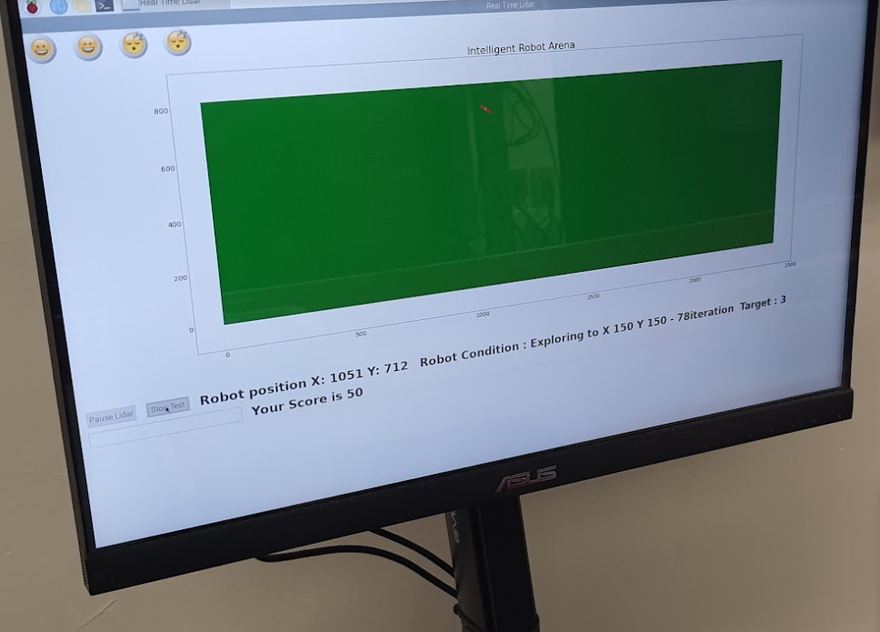

Take a look at my resume for a quick overview here
This autonomous robot was made in a group of three for the class ENGR 122 - "Field Sustainable Systems with Sensors". The project required us to create a robot to traverse an obstacle course (2nd photo) with no external control. In order to construct this robot, a litany of tools were used including 3D printers and Solidworks for the chassis, soldering stations, ultrasonic sensors, and an AVR microcontroller for the electronics, and Arduino IDE, C++, and an external web server for LiDAR position data for the onboard logic of the robot. To view a full report on the project click here
